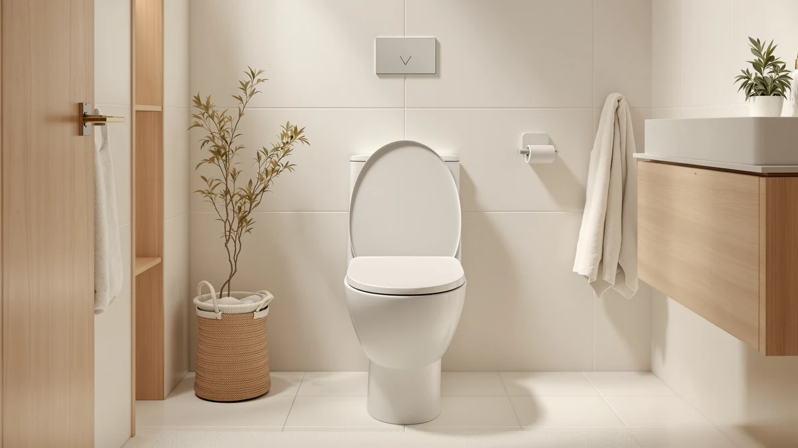

Swiss Madison Lumiere Elongated Quick-Release Toilet Seat Review (2026): Worth It?
Prices and picks verified as of November 2026. Independent, reader-supported reviews.


Quick Answer
Our Swiss Madison Lumiere elongated quick-release toilet seat review finds a soft-close elongated seat that's easy to pull off for cleaning and glows at night without a wall outlet. At $49.88, it sits in the same price band as three close competitors, and it wins on convenience features rather than raw durability specs.
Our pick: Lumiere Elongated Quick-Release Toilet Seat — $49.88 Check Price on Amazon
Bottom line: our top pick is the Lumiere Elongated Quick-Release Toilet Seat with Night Light at $49.88.
Things to Know Before You Buy
- The Lumiere fits standard elongated bowls only, not round-front toilets.
- Its quick-release hinges let you lift the seat off without tools, which matters most when you're cleaning around the hinge area.
- Swiss Madison doesn't publish a weight rating or a verified review count for this model, so we can't compare that figure against the competition.
- If you need a higher weight capacity, the Bariatric Raised Toilet Seat below is rated for 500 pounds.
- If a child in the house is potty training, the Mayfair NextStep2 or the GAOMON seat both build a toddler seat into the lid.
This Swiss Madison Lumiere elongated quick-release toilet seat review exists because the Lumiere shows up in search results for both "soft close" and "night light" toilet seats, two features that rarely come bundled at this price. You want to know whether that combination actually holds up against seats built for a single purpose, like weight capacity or potty training, rather than general convenience.
We compared the Lumiere's listed features, its $49.88 price and the Amazon listing data for three other elongated seats in the same price range: a 500-pound bariatric seat, a Mayfair NextStep2 with a built-in toddler potty, and a GAOMON family seat with the same toddler-seat concept. The Lumiere comes out ahead for anyone who wants a quiet-closing, easy-to-remove seat with nighttime visibility built in, but it loses ground to the alternatives on weight capacity and kid-focused features.
Price alone doesn't separate these four seats. The Lumiere at $49.88, the Bariatric seat at $49.89, the Mayfair at $49.63 and the GAOMON at $47.53 all sit within a two-dollar band, so the decision comes down to which specific feature your bathroom actually needs. That's the comparison the rest of this Swiss Madison Lumiere elongated quick-release toilet seat review walks through.
Why You Should Trust Us
Ilane Tall researches bathroom fixtures for Best Toilet Seats, reading manufacturer spec sheets, current Amazon pricing and patterns across verified owner reviews before any product gets a recommendation. This Swiss Madison Lumiere elongated quick-release toilet seat review is built the same way: no product samples, no lab, a side-by-side read of what each seat's listing and buyer feedback actually say.
We do not run a fake testing lab. We don't buy, install or live with these seats, and we don't claim otherwise anywhere on this site. What you get instead is a comparison grounded in the manufacturer's own specs, current pricing and what verified buyers report after they've installed the seat themselves.
We also update this Swiss Madison Lumiere elongated quick-release toilet seat review when pricing or availability shifts. If Swiss Madison adds a published weight rating or review count for this ASIN, we'll fold that into the comparison rather than leave an outdated snapshot in place.
How We Compared
Research for this Swiss Madison Lumiere elongated quick-release toilet seat review started with the manufacturer's listed features: soft-close hinges, a built-in night light and quick-release mounting hardware rated for standard elongated bowls. We then checked those claims against the product images and specifications Swiss Madison publishes and cross-referenced the listing against the three competing seats covered below.
Swiss Madison does not currently publish a star rating or a reviewer count for this ASIN, so we're not able to compare review volume the way we can for the Bariatric seat, which carries a verified 4.6-star average across 1,338 reviews. Where a rating or review count isn't available, we say so rather than guess, and we weight the comparison toward verifiable specs and pricing instead.
The research approach stays the same for every seat in this comparison. We read the manufacturer's listed materials, dimensions and hardware claims, note the current Amazon price, and check whether a verified rating or review count exists before citing one. Nothing here comes from a physical tryout, a lab, or a personal bathroom.
Overview & Specs
On paper, the Lumiere is an elongated, soft-close toilet seat built from a plastic and wood composite, finished in white, with a quick-release mounting system and an integrated night light. Swiss Madison sells it exclusively as a replacement seat for standard elongated bowls, not as part of a complete toilet.

Lumiere Elongated Quick-Release Toilet Seat
What we like
- Soft-close hinges prevent the slam that fixed-hinge seats are known for
- Built-in night light removes the need for a plug-in bathroom light
- Quick-release hinges let the seat come off without tools for cleaning
- Priced in line with competing elongated seats at $49.88
Flaws but not dealbreakers
- No published weight rating, unlike the Bariatric seat's listed 500-pound capacity
- No star rating or review count published for this ASIN yet
- Fits elongated bowls only, so round-front toilet owners need a different seat
| Material | Plastic / wood |
| Size | — |
Swiss Madison markets the Lumiere as a standard elongated replacement seat, and the "with Night Light" part of the name isn't an afterthought. The night light runs off the seat's own hardware rather than a plug-in nightlight stuck to an outlet, which is the detail that pulls this seat into comparisons with dedicated night-light models like the Kohler Cachet line.
Soft-close hinges are now close to standard at this price point, but Swiss Madison pairs them with quick-release mounting hardware, so the whole seat lifts off the bowl without a screwdriver. That combination matters more for cleaning access than for day-to-day use, and it's the main reason this seat holds its own against seats built for a narrower purpose, like the bariatric and toddler-seat models covered below.
What We Liked
The strongest point in this Swiss Madison Lumiere elongated quick-release toilet seat review is the pairing of two features that usually come separately: a soft-close hinge and an integrated night light. Most budget seats make you choose one or the other, and seats that combine them, like several Kohler Cachet models, tend to cost noticeably more.
The quick-release hinge system is the other standout. Swiss Madison lists it as tool-free, which matches the pattern we see across quick-release seats from other brands: the seat lifts straight up off two small mounting points, instead of requiring you to reach under the bowl with a wrench. For anyone who deep-cleans a bathroom regularly, that's a meaningful convenience difference over a fixed-hinge seat.
Price is the third point in this Swiss Madison Lumiere elongated quick-release toilet seat review worth calling out directly. At $49.88, the Lumiere doesn't carry a premium over any of the three alternatives we compared it against, even though it bundles two features, soft-close and a night light, that competing seats in this set don't offer together.
What Could Be Better
Swiss Madison hasn't published a weight rating for the Lumiere, which puts it at a disadvantage next to the Bariatric Raised Toilet Seat covered below, a seat built specifically around a 500-pound capacity and a verified 4.6-star average from 1,338 reviews. If weight capacity is your top priority, that gap matters more than the night light.
The listing also carries no star rating or review count yet, since the ASIN is newer to the catalog than its competitors here. We'd rather tell you that plainly than invent a number, but it does mean you're relying more on the spec sheet and less on a track record of verified buyer feedback than you would with an established seat.
The Lumiere also isn't built for a specific use case the way the other three seats are. The Bariatric, Mayfair and GAOMON seats each target a defined need, extra weight capacity or a built-in toddler seat, while the Lumiere's night light and soft-close combination appeals to a broader audience. That's an advantage if you don't have a specific requirement, and a limitation if you do.
Who Is It For?
This Swiss Madison Lumiere elongated quick-release toilet seat review points toward one clear buyer: someone with a standard elongated bowl who wants a quieter, easier-to-clean upgrade over a builder-grade seat, and who likes the idea of a night light that doesn't need its own outlet. It's a general-purpose upgrade, not a specialty seat.
You should skip it if you need a specific weight rating in writing, or if a toddler in the house needs a built-in potty seat. Both of those needs are better served by one of the three alternatives we cover next.
Renters and landlords also fit the profile well. The quick-release hinge makes it straightforward to swap the seat out when a tenant moves in or out, without needing a maintenance visit for something as small as a toilet seat replacement.
Alternatives to Consider
The Lumiere isn't the right seat for every bathroom, so here are three alternatives worth comparing before you buy, each built around a need the Lumiere doesn't target.

Premium Choice
Bariatric Raised Toilet Seat with
Rated for 500 pounds with a 4.6-star average across 1,338 verified reviews, this universal-size seat with handles is the pick for bathrooms that need a higher weight capacity and added support than the Lumiere offers.
$49.89
Check Price on Amazon
Also Great
Mayfair NextStep2 Toilet Seat with
A magnetic toddler potty seat tucks neatly into the lid and stays out of the way during adult use, which makes this the better choice for households potty-training a child in a shared bathroom.
$49.63
Check Price on Amazon
Best Value
Elongated Toilet Seat With Toddler
At $47.53, this durable PP family seat covers the same built-in toddler seat concept as the Mayfair at a slightly lower price, worth a look if budget comes first and the soft-close hinge still matters to you.
$47.53
Check Price on AmazonIs the Swiss Madison Lumiere toilet seat worth buying?
Based on our Swiss Madison Lumiere elongated quick-release toilet seat review, it's worth the $49.88 price if you want a soft-close elongated seat with a built-in night light and tool-free hinges for easy cleaning.
Does the Swiss Madison Lumiere seat fit a standard elongated toilet?
Yes.
Frequently Asked Questions
Is the Swiss Madison Lumiere toilet seat worth buying?
Based on our Swiss Madison Lumiere elongated quick-release toilet seat review, it's worth the $49.88 price if you want a soft-close elongated seat with a built-in night light and tool-free hinges for easy cleaning. Shoppers who need a higher weight rating or a potty-training insert are better served by one of the alternatives below.
Does the Swiss Madison Lumiere seat fit a standard elongated toilet?
Yes. Swiss Madison lists the Lumiere as compatible with standard elongated toilet bowls, the same fit as most US residential elongated models. It is not designed for round-front bowls.
How does the quick-release hinge work on the Lumiere seat?
The quick-release hinge lets the seat lift straight off the bowl without tools, so you can clean underneath it or swap it out in minutes. It is one of the features that separates this seat from fixed-hinge budget models in the same price range.
Final Verdict
This Swiss Madison Lumiere elongated quick-release toilet seat review lands on a clear recommendation for a specific buyer. If you want a quieter, easier-to-clean elongated seat with a night light that doesn't need its own outlet, the Swiss Madison Lumiere earns its $49.88 price. If your priority is a verified weight rating or a built-in toddler seat, pick one of the three alternatives above instead.
Swiss Madison built a seat here that competes on convenience rather than a single headline spec, and for most elongated-bowl bathrooms, that's the right trade. Keep the three alternatives in mind if your situation calls for a defined weight capacity or a potty-training feature the Lumiere doesn't offer.